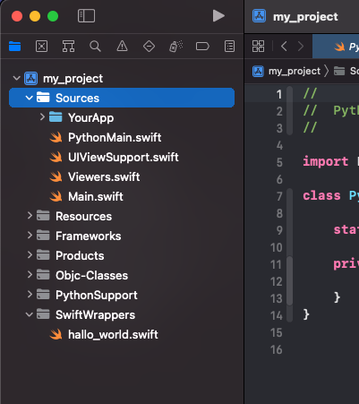
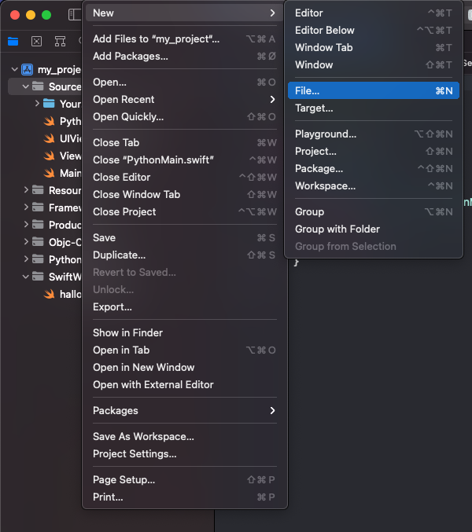
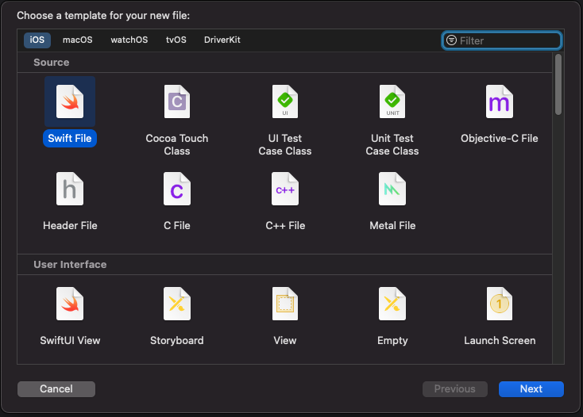
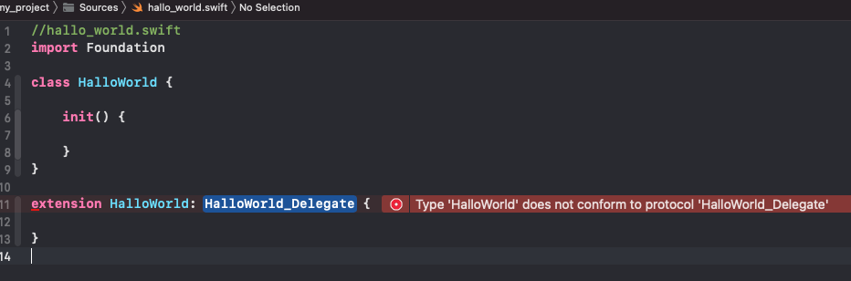
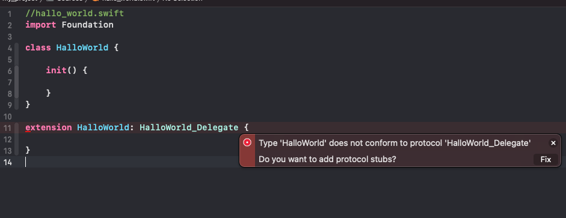
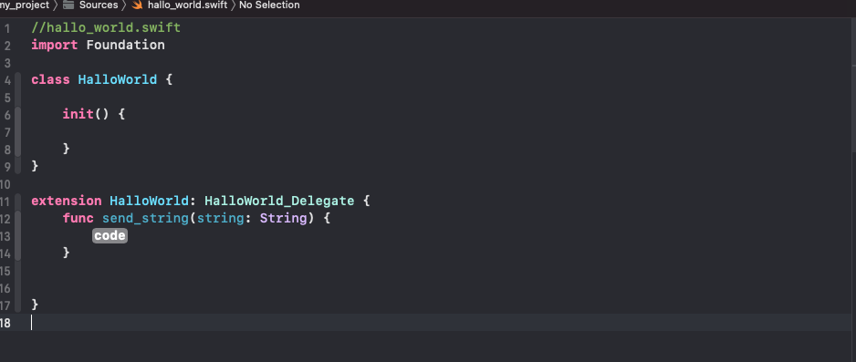

Making your first wrapper:
Part 1
<working_folder>/<your_project>/wrapper_sources
called
hello_world.py
and paste the following:
#hello_world.py
from swift_types import *
@wrapper
class HelloWorld:
def send_string(self, string: str): ...
Swift:
Open the Xcode project. (my_project-ios)
Click on File -> New -> File
and write the name “HelloWorld.swift
HelloWorld.swift
//HelloWorld.swift
import Foundation
class HelloWorld {
init() {
}
}
extension HelloWorld: HelloWorld_Delegate {
}
You will now be met by the following warning
Click on the red box to get the following option
Xcode will now inject the missing protocol functions (the ones you defined in the hello_world.py wrapper file.)
replace code with the following string:
print(string)
and you should end up with the this result
//HelloWorld.swift
import Foundation
class HelloWorld {
init() {
}
}
extension HelloWorld: HelloWorld_Delegate {
func send_string(string: String) {
print(string)
}
}
Here comes the most important of all, because just creating a swift class with the same name won’t do much magic.
You might also wonder what is this HelloWorld_Delegate, other than it mimics the same function layout as you wrote in the hello_world.py.
Protocols are used to create links between different classes, or in our case to connect the generated code in “hello_world.swift” ( look in SwiftWrappers group ).
So for each wrapper file, KivySwiftLink will create a protocol with the same name layout <WrapperClassName>_Delegate. In this case, it will be HelloWorld_Delegate.
So how do we set the protocol/delegate target then? Well, simple, KSL also generates a function for that need and will have the following name layout
Init<WrapperClassName>_Delegate
and accepts the following arguement
(delegate: <WrapperClassName>_Delegate)
so in HelloWorld’s case:
InitHelloWorld_Delegate(delegate: HelloWorld_Delegate)
Let’s insert InitHelloWorld_Delegate in the init in HelloWorld swift class,
but use self as the delegate parameter since self conforms to HelloWorld_delegate
//HelloWorld.swift
import Foundation
class HelloWorld {
init() {
InitHelloWorld_Delegate(delegate: self)
}
}
extension HelloWorld: HelloWorld_Delegate {
func send_string(string: String) {
print(string)
}
}
Now for the final step on the swift-side.
PythonMain.swift
goto PythonMain.swift
PythonMain is the main class, where all your Swift classes needs to inited from.
see it as the main root, since this Class will be inited as the first thing when app launches. Once this class is done initing all the classes that have been added to it, then the Kivy main app will start running.
Add the following line to PythonMain class
let hello_world = HelloWorld()
//
// PythonMain.swift
//
import Foundation
class PythonMain {
static let shared = PythonMain()
let hello_world = HelloWorld()
private init() {
}
}